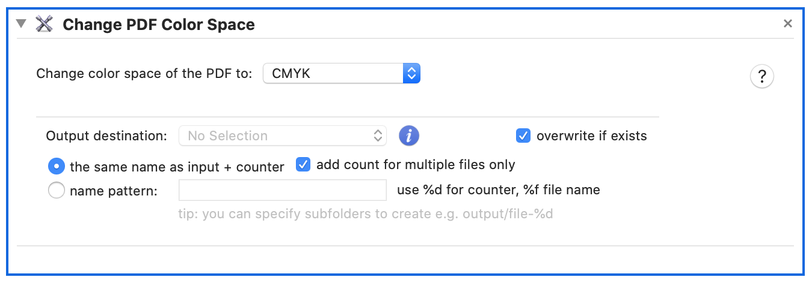

Change PDF Color Space
PDF supports different color models. Many digital channels (screen) use RGB whereas CMYK is usually used by color printers. Use this action to convert one color space to another.

Choose one of supported options:
- CMYK - usually used for printing
- Grayscale
- Monochrome
- PDF/X-3 (CMYK color https://en.wikipedia.org/wiki/PDF/X)
Create PDF/A
To create valid PDF/A document, use Transform PDF action.